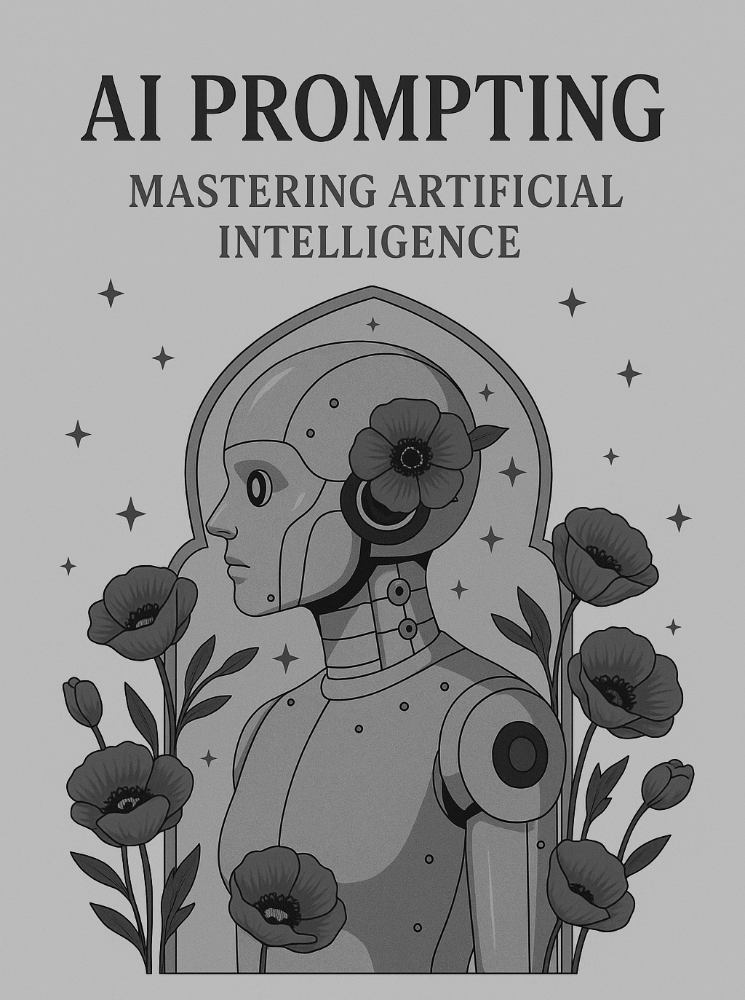

AI Prompting 1.0
Authored a comprehensive course on AI Prompting, covering fundamental concepts, effective prompt design, advanced techniques (like Roleplaying, Few-Shot, Chain-of-Thought), output analysis, and ethical considerations, aimed at taking learners from beginner to advanced levels.
Key Features & Achievements:
- Structured curriculum covering foundational principles to advanced prompting strategies (e.g., Roleplaying, Few-Shot, CoT).
- Included practical workshops, comparative examples (good vs. bad prompts), and real-world scenarios.
- Emphasized ethical considerations and responsible AI use throughout the material.
Full-Stack Web Applications
Developed a diverse portfolio of full-stack web applications, including an e-commerce perfume store, a flat rental platform, an AI voice-to-image generator, an anonymous confession site, and a PC building tool, demonstrating end-to-end development capabilities.
Tech: Flask (Python), PostgreSQL/SQLite, HTML, CSS, JavaScript (incl. Three.js for 3D), PDF Generation Libraries, Various APIs (AI, Payments, etc.), User Authentication Systems.
Key Features & Achievements:
- Implemented secure user authentication and complex user/admin management systems.
- Integrated diverse APIs for functionalities like AI image generation and payments.
- Developed features such as dynamic PDF generation, real-time updates, and interactive 3D elements.
- Built full e-commerce capabilities including order management.
- Learned and applied AI prompting techniques for product descriptions and support automation.
Android Applications
Developed a simple Android to-do application that allows users to link accounts and share lists collaboratively, as an entry-level project.
Tech: Java, Android SDK, Firebase
Key Features & Achievements:
- Create and manage personal to-do lists.
- Link accounts for user identification.
- Share to-do lists with other users.